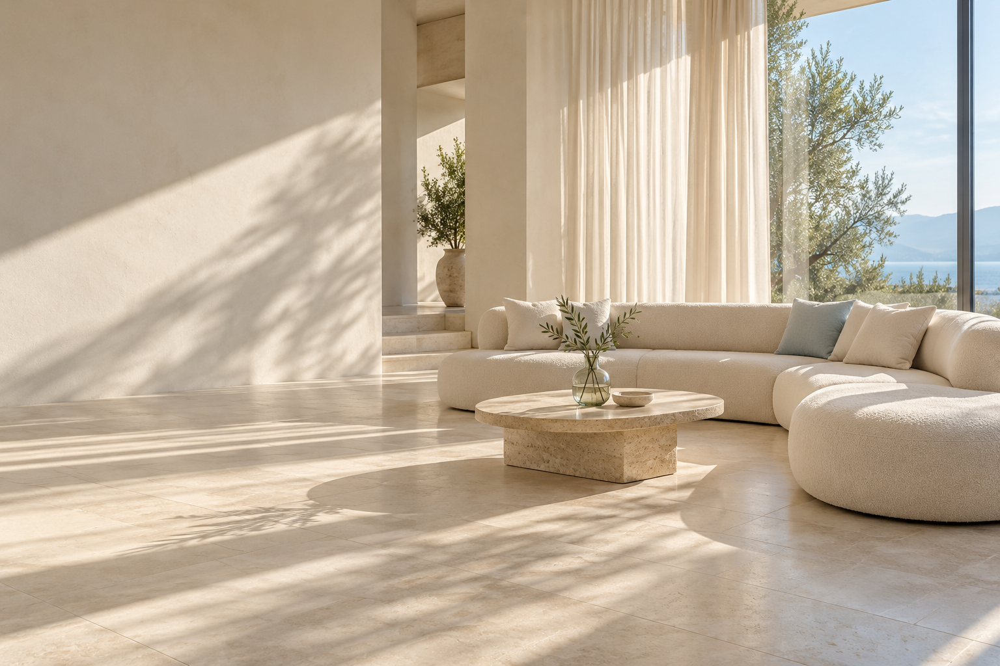
Hapësira juaj.Pastër si drita.
Pastrim profesional për shtëpi, vila dhe biznese në Tiranë dhe qytete të tjera. Me ekspertizë nga Italia dhe kujdes në çdo detaj.
Çdo hapësirë.
I njëjti kujdes.
Nga pastrimi i thellë te mirëmbajtja e përditshme. Zgjidhni shërbimin që i duhet ambientit tuaj; për detajet kujdesemi së bashku.
Produkte dhe metoda të përzgjedhura sipas materialit dhe sipërfaqes.
01Shtëpi & vila
Pastrim i plotë për apartamente dhe vila shumëkatëshe. Nga kuzhina dhe tualetet, te dyshemetë, xhamat dhe ballkonet — kujdes në çdo cep.
Kërko çmim për shtëpinë02Zyra & biznese
Një ambient i kuruar për ekipin dhe klientët tuaj. Pastrim profesional zyrash, baresh, kafenesh dhe restorantesh, si edhe mirëmbajtje pallatesh.
Kërko çmim për biznesin03Pas punimeve
Heqje llaçi, mbetjesh ndërtimi dhe pikash boje. Pastrim i thellë për ta bërë ambientin gati pas ndërtimit ose rikonstruksionit, me kujdes për çdo material.
Kërko çmim pas punimeve04Avull & tapiceri
Larje tapicerish, pastrim dhe higjienizim këndesh, me teknologji profesionale me avull aty ku materiali e lejon. Për një ndjesi freskie që ndihet.
Kërko çmim për tapicerinë05Pastrim i specializuar
Pastrim myku dhe pishinash, si dhe kujdes i posaçëm për tavanet e shkallët prej druri natyral. Produkte premium dhe metoda të përshtatura sipas sipërfaqes.
Na tregoni çfarë ju duhet06Kujdes i vazhdueshëm
Hekurosje me abonim mujor për familje, mirëmbajtje periodike, sistemim dhe organizim. Një zgjidhje që përshtatet me ritmin e jetës suaj.
Diskutojmë abonimin tuajPaketa
General
Për një ambient të pastër e të sistemuar, me kujdes për sipërfaqet dhe pastrim nga jashtë të pajisjeve të kuzhinës.
Dëshironi pastrim edhe nga brenda? Zbuloni paketën Me themel ↗
- 01
Xhama, dyer & kasa
Larje xhamash, dyersh dhe kasash, me kujdes për sipërfaqen.
- 02
Pajisjet, nga jashtë
Pastrim frigoriferi, pianure, mikrovale dhe furre nga jashtë.
- 03
Raftet e kuzhinës
Pastrim i rafteve të kuzhinës dhe kundrabufesë.
- 04
Raftet e dhomave
Pastrim i rafteve nga jashtë në dhomat e gjumit.
- 05
Tualete & ballkone
Pastrim tualetesh dhe ballkonesh; xhama, kangjella dhe grila me avull, sipas materialit.
- 06
Dysheme & sipërfaqe
Pastrim dyshemeje dhe heqje pluhurash nga çdo sipërfaqe dhe llambadarët.
Nuk përfshihet organizimi i rrobave në raftet dhe dollapët e dhomave të gjumit. Avulli dhe produktet përshtaten sipas materialit.
Një ndryshim
që duket.
Pastërti që shihet në çdo detaj. Freski që ndihet.
Pamje referencë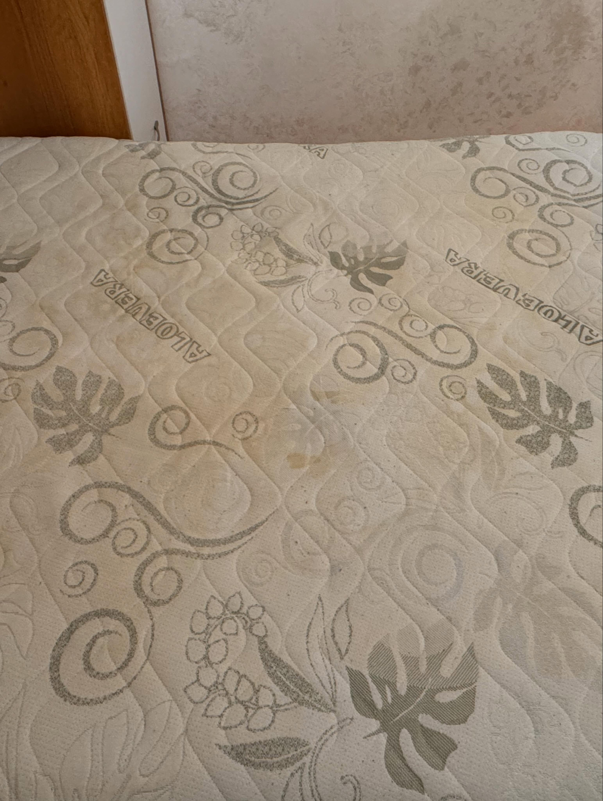
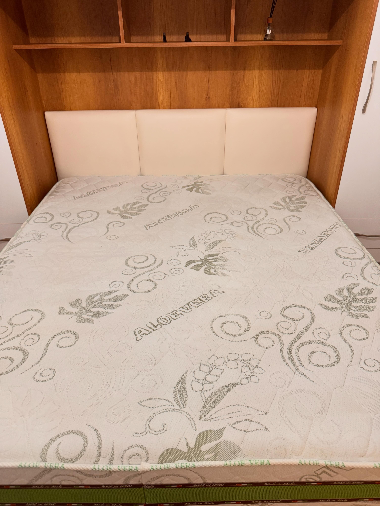
Paketa
Me themel
Një fillim i freskët për të gjithë shtëpinë. Pastrim i plotë, përtej sipërfaqes që duket.
Higjienizim i këndit me avull
Çmimi përcaktohet sipas sipërfaqes dhe gjendjes së ambientit. Çmimin e diskutojmë me ju.
Xhama, dyer & ballkone
Larje xhamash, dyersh dhe kasash. Pastrim ballkonesh, kangjellash dhe grilash, me avull ku materiali e lejon.
Kuzhina, edhe nga brenda
Frigoriferi, pianura, mikrovala dhe furra, me trajtim të yndyrës dhe ndryshkut sipas materialit. Pastrim i rafteve të kuzhinës nga brenda.
Rafte & çdo sipërfaqe
Pastrim i rafteve të dhomave të gjumit nga brenda. Heqje pluhurash nga sipërfaqet dhe llambadarët, me vëmendje në çdo cep.
Tualete & dysheme
Pastrim i plotë i tualeteve dhe dyshemeve, me higjienizim me avull të sipërfaqeve të përshtatshme.
Organizimi i rrobave në dollapë diskutohet veçmas. Produktet dhe përdorimi i avullit përshtaten sipas materialit.
Përvoja bën
ndryshimin.
Sjellim ekspertizën shumëvjeçare në menaxhimin e shërbimeve profesionale të pastrimit në Itali. Për ne, një ambient i pastër fillon nga mënyra si kujdesemi për të.
Profesionalizëm, hap pas hapi
Diskutojmë nevojat, organizojmë punën dhe i kushtojmë vëmendje çdo detaji.
Produkti i duhur për sipërfaqen
Pajisje profesionale dhe metoda të zgjedhura për materialin që trajtojmë.
Hapësira juaj, prioriteti ynë
Nga apartamenti te vila apo biznesi, shërbimi përshtatet me ambientin tuaj.
Bizneset që kanë zgjedhur cilësinë tonë.
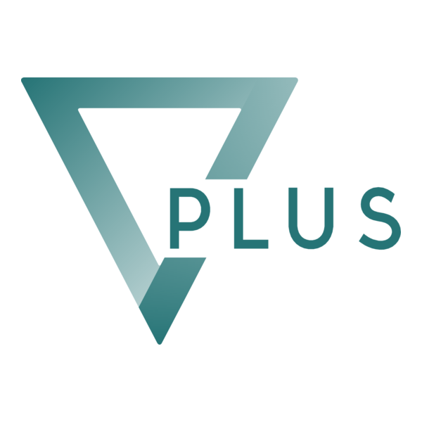
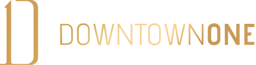
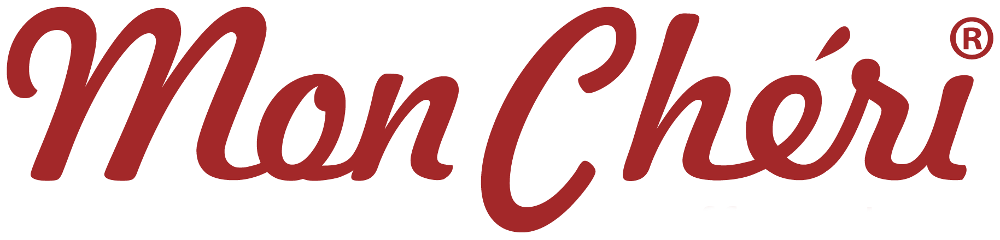
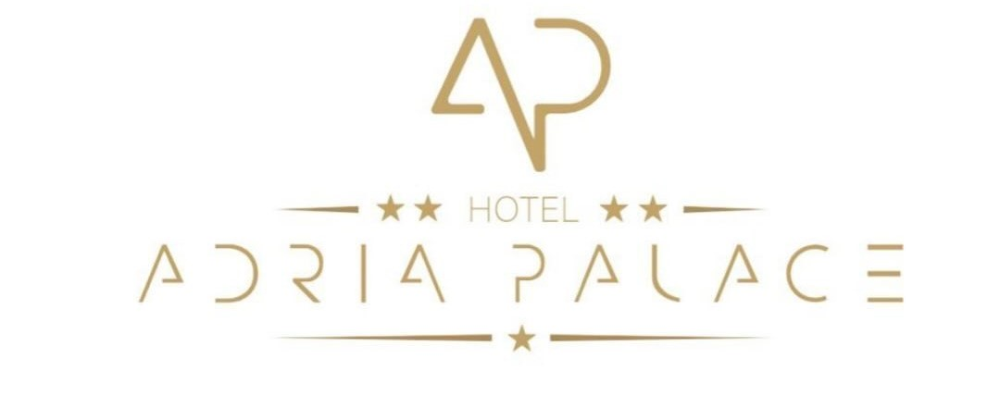
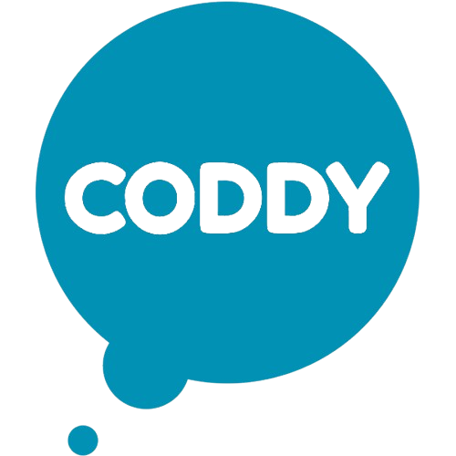
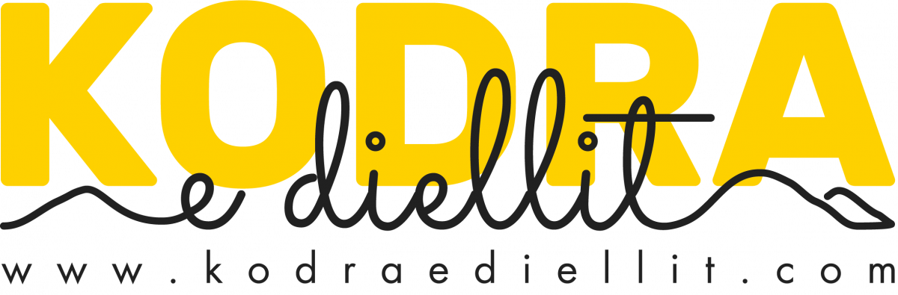
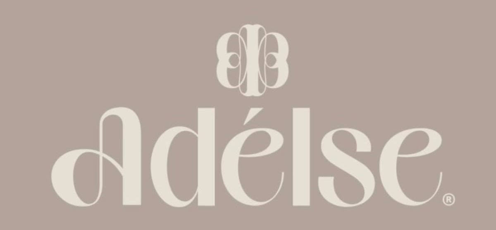
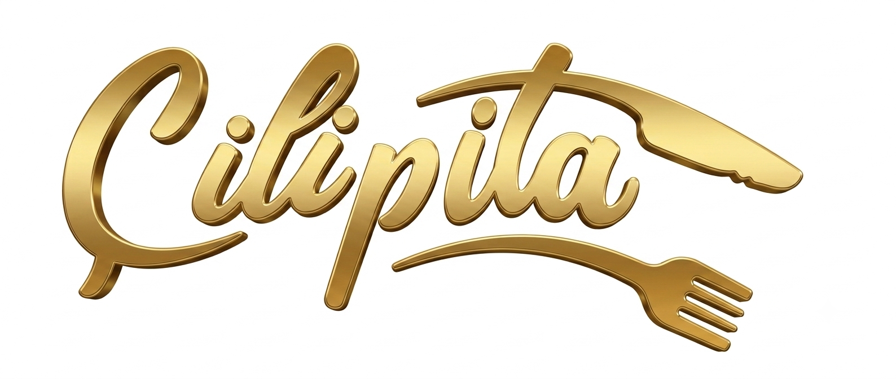
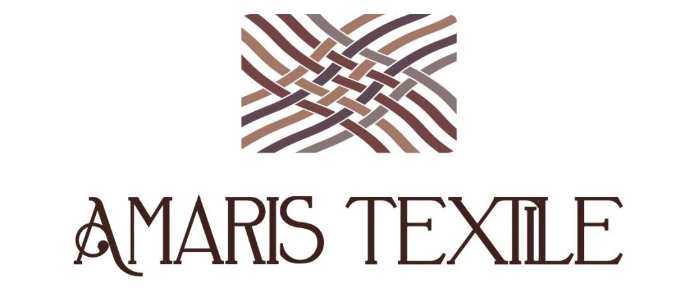
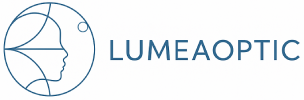
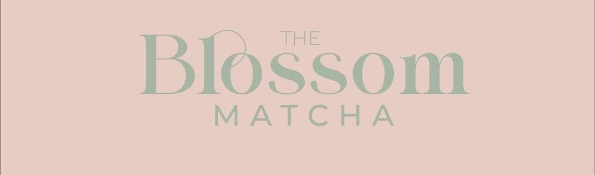
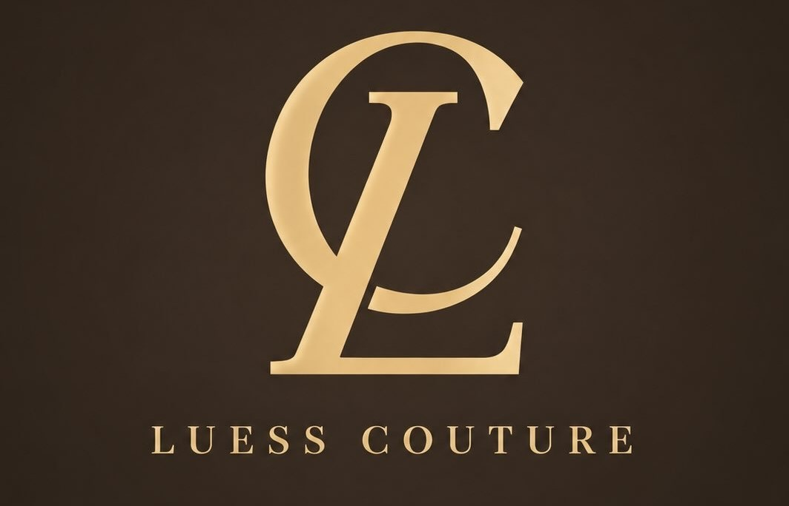
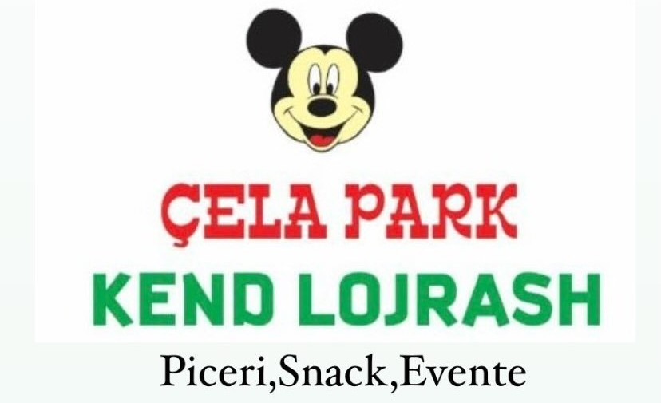
Kujdesi ynë,
në lëvizje.
Nga lëvizja e parë te detaji i fundit. Një vështrim nga afër te pastrimi profesional.
Më shumë në InstagramVideo referencë
Pyetje të
shpeshta.
Keni një pyetje tjetër? Na shkruani dhe e diskutojmë së bashku.
Na pyesni në WhatsAppSi mund të rezervoj pastrim?
Plotësoni formularin më poshtë ose na kontaktoni në WhatsApp te 068 474 4488. Na tregoni shërbimin, zonën dhe ambientin që doni të pastroni.
Si përcaktohet çmimi i pastrimit?
Çmimi varet nga sipërfaqja, gjendja e ambientit dhe shërbimi i kërkuar. Foto ose video të ambientit në WhatsApp na ndihmojnë të përcaktojmë çmimin më saktë.
Cili është ndryshimi mes paketave?
Paketa General përfshin pastrim nga jashtë të frigoriferit, pianurës, mikrovalës, furrës dhe rafteve të dhomave të gjumit. Paketa Me themel përfshin edhe pastrimin nga brenda të pajisjeve dhe rafteve të përshkruara në paketë. Të dyja kanë dhuratë higjienizimin e këndit me avull. Organizimi i rrobave në dollapë nuk përfshihet.
Çfarë përfshin paketa “Me themel”?
Pastrimin e xhamave, dyerve, kuzhinës dhe pajisjeve nga brenda, rafteve, tualeteve, ballkoneve, dyshemeve dhe sipërfaqeve. Përfshihet dhuratë higjienizimi i këndit me avull. Shikoni përmbledhjen e plotë te seksioni i paketës.
A pastroni vila dhe ambiente biznesi?
Po. Ofrojmë pastrim për apartamente e vila shumëkatëshe, zyra, bare, kafene dhe restorante, si dhe mirëmbajtje pallatesh në Tiranë dhe qytete të tjera. Na tregoni qytetin dhe zonën për të konfirmuar shërbimin.
Si funksionon abonimi i hekurosjes?
Ofrojmë hekurosje me abonim mujor për familje. Na kontaktoni për të diskutuar nevojat, shpeshtësinë dhe çmimin e abonimit.
A konfirmohet rezervimi nga formulari?
Formulari përgatit një kërkesë për pastrim në WhatsApp. Mesazhin e dërgoni ju; çmimi, data dhe orari konfirmohen më pas me ekipin.
Çfarë thonë
klientët tanë
Përshtypje pas shërbimit.
Përvoja juaj ka rëndësi.
Përshtypjet e klientëve do të shfaqen së shpejti këtu.
Pastërtia fillon
me një mesazh.
Na tregoni çfarë ju duhet. Ne do të kujdesemi të gjejmë shërbimin e përshtatshëm për ambientin tuaj.
068 474 4488